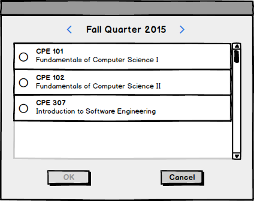
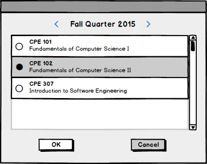
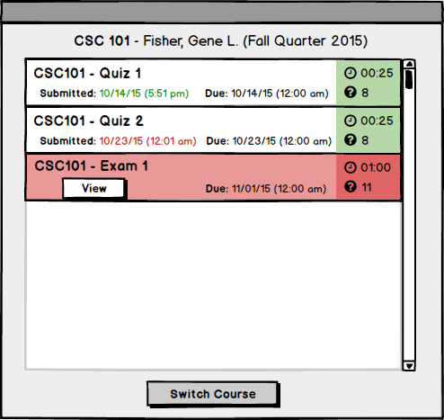
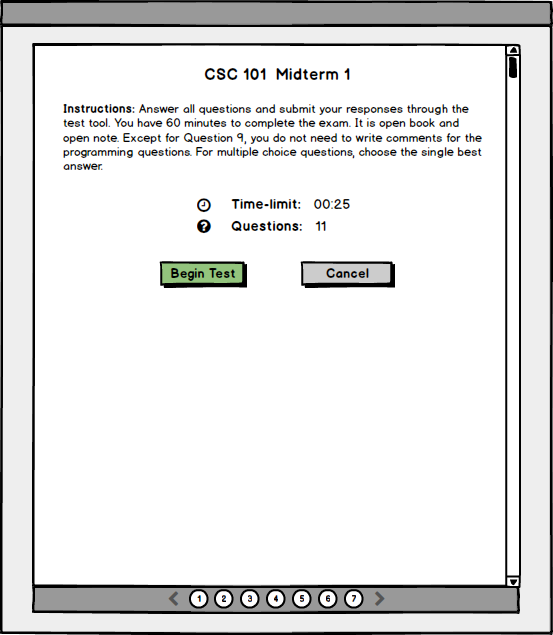

The scenario in this section describes the steps a user (student) takes to select and view an assigned test.
The user clicks on the 'take a test' option from the main menu. The system responds by presenting the user with a list of courses that they are currently enrolled in.

Figure 0: List of courses the user is enrolled in.
The user clicks on a course. The system responds by selecting the course, which is indicated visually by highlighting the course listing, and highlighting the button labeled 'OK' at the bottom of the screen.

Figure 1: A listing is selected from the course list.
The user clicks on the button labeled 'OK'. The system responds by displaying a list of the published tests currently assigned to the course that the user selected.

Figure 2: List of published tests assigned to the currently selected course.
The tests are displayed as listings with the following attributes: the title of the test, the expiration date after which the user cannot submit their answers to the test, the time limit of the test, and the number of questions on the test. Tests that have already been taken also display a time-stamp of when the test was submitted: the submission time is colored green if the user's answers were submitted before the test's due date, and red if the answers were submitted late. Displayed above the list of tests is the course title and code, the teacher of the course, and the term during which the course is being offered. Listings for tests that are assigned and have yet to be taken are highlighted in red, and are displayed with a button labelled 'View' rather than a submission date.
The user clicks on the 'View' button for an assigned test. The system responds by opening the introductory screen of the selected test.

Figure 3: Introductory page of test view.
This screen displays detailed information about the test, including the title of the test, a prompt with additional instructions, a count of the number of questions on the test, and a time limit for the user to submit the test once they have begun taking it.
At the bottom of the page is a button labelled 'Begin Test'. The user does not begin taking the test (and the timer for the test does not start) until they click on this button.